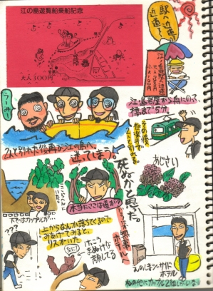

神奈川かまくら篇2  江の島は奥深い（というか、わざわざこんな所、行かなくてもいいじゃないかって所に行く私も悪いのだが・・・）というのは意外だった。 密林、崖っぷち、蜂の大群。 「私、こんなところでなにしてんだろう・・・」と崖の下を通るカップルを見下ろしながら思わず遠い目をしてしまった。 ＮＥＸＴ・・・
神奈川かまくら篇2

江の島は奥深い（というか、わざわざこんな所、行かなくてもいいじゃないかって所に行く私も悪いのだが・・・）というのは意外だった。 密林、崖っぷち、蜂の大群。 「私、こんなところでなにしてんだろう・・・」と崖の下を通るカップルを見下ろしながら思わず遠い目をしてしまった。 ＮＥＸＴ・・・